FP Básica
Electricidad y Electrónica
Tu primera toma de contacto con el oficio. Montarás instalaciones eléctricas de vivienda, redes de datos y pequeños equipos electrónicos, a la vez que completas tu formación básica.
Taller de automatización y robótica
En el Departamento de Electricidad y Electrónica del IES Julián Marías formamos profesionales capaces de diseñar, montar y programar las instalaciones y las máquinas que mueven la industria: desde la FP Básica hasta el Curso de Especialización en Fabricación Inteligente.
// 01 — Oferta formativa
Un itinerario completo que te acompaña desde tus primeros empalmes hasta la industria conectada. Empieza donde quieras y sigue subiendo de nivel.
Tu primera toma de contacto con el oficio. Montarás instalaciones eléctricas de vivienda, redes de datos y pequeños equipos electrónicos, a la vez que completas tu formación básica.
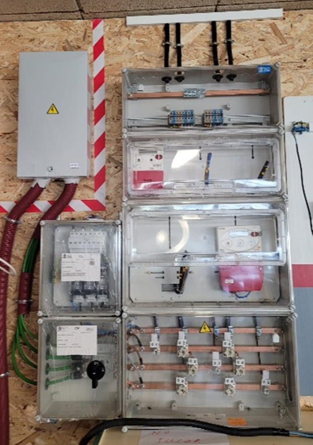
El ciclo del electricista profesional: viviendas, edificios e industria, automatismos, telecomunicaciones, energía solar y recarga de vehículo eléctrico. Sales preparado para trabajar.
.jpeg)
Programa autómatas, robots y redes industriales. Diseña y pon en marcha líneas automatizadas como las que encontrarás en las grandes fábricas de la región.
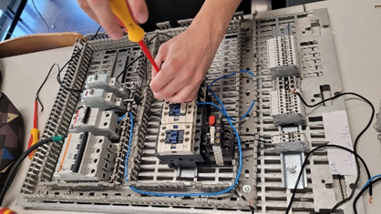
Del plano a la obra: calcula, proyecta y dirige instalaciones eléctricas, de telecomunicaciones y automatizadas. El perfil técnico que coordina equipos y proyectos.
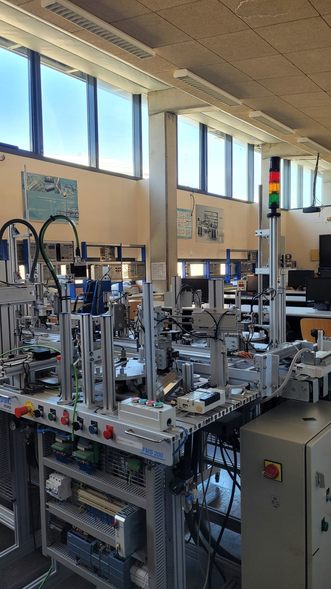
Curso de especialización para dar el salto a la industria 4.0: digitalización, sistemas ciberfísicos, datos de planta y gemelos digitales. El complemento perfecto tras un Grado Superior.
// 02 — Talleres y laboratorios
Estos son los talleres donde se desarrollan las clases prácticas. Trabajamos con el mismo tipo de equipos que se usan en las empresas, para que lo que se aprende aquí sirva después en el trabajo.
Paneles de vivienda, cuadros de distribución, centralización de contadores y equipos de verificación.
Células de fabricación flexible, autómatas programables, neumática y comunicaciones industriales.
Robots industriales, simulación con RobotStudio y gafas de realidad virtual para practicar sin riesgos.
Instalaciones fotovoltaicas, recarga de vehículo eléctrico e infraestructuras comunes de telecomunicaciones.
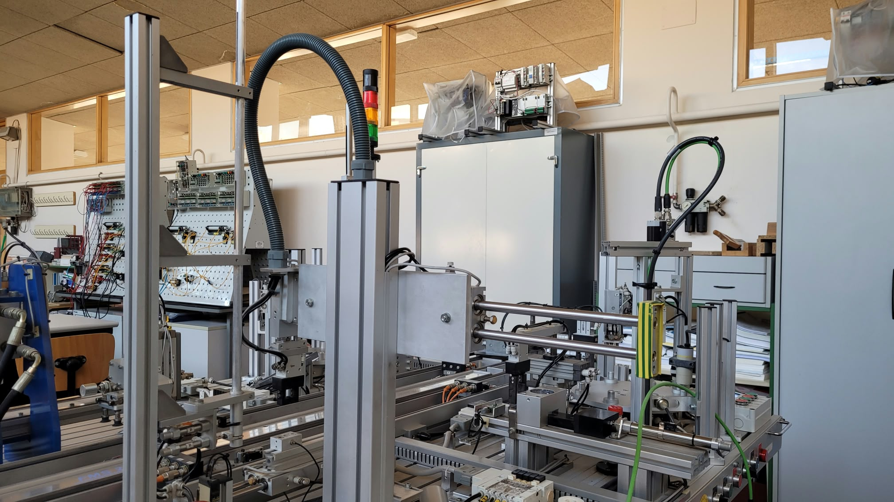
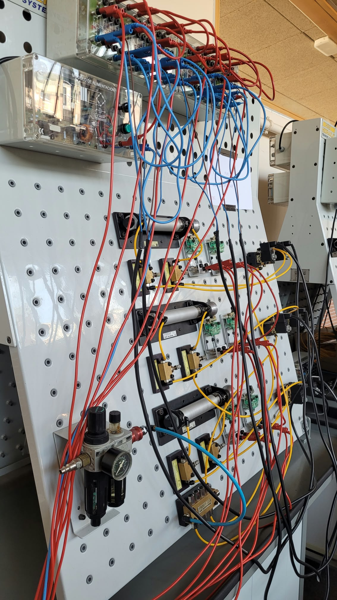
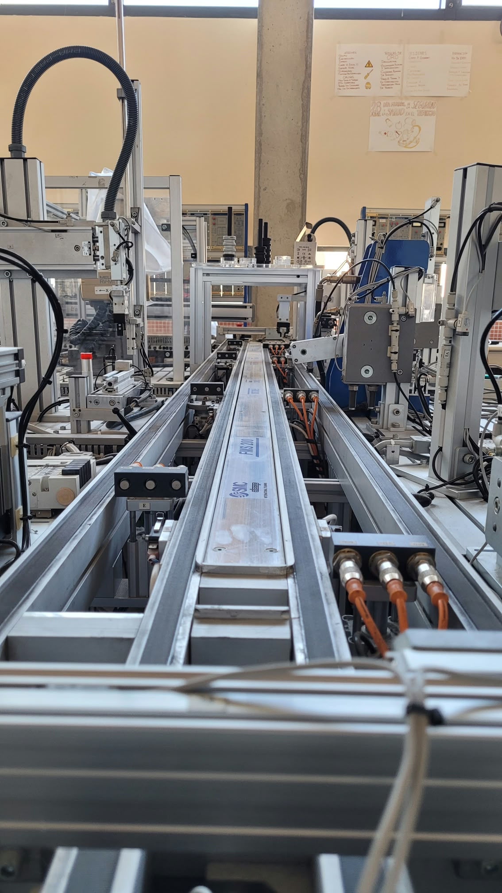
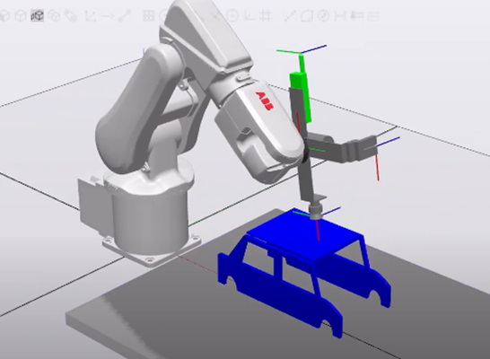

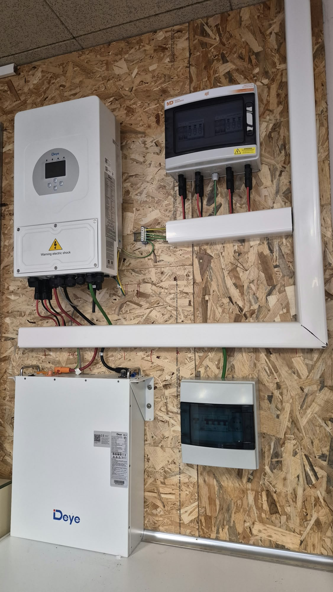
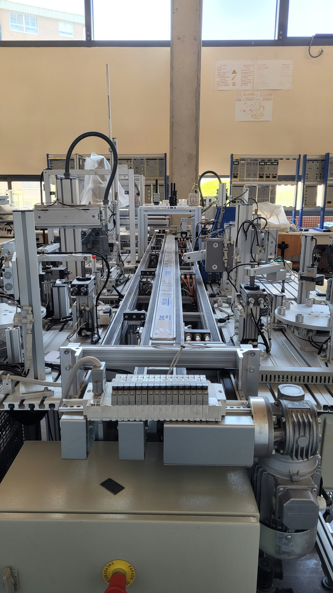
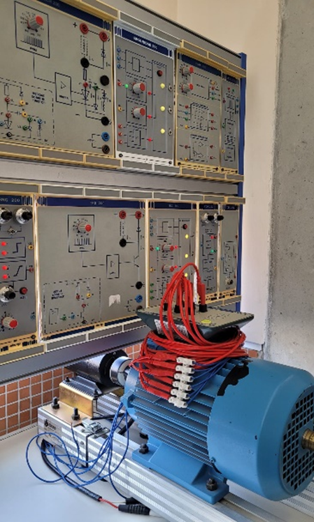

.jpeg)
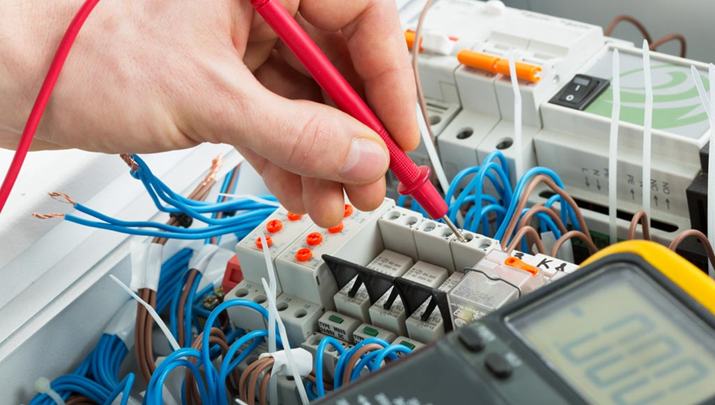
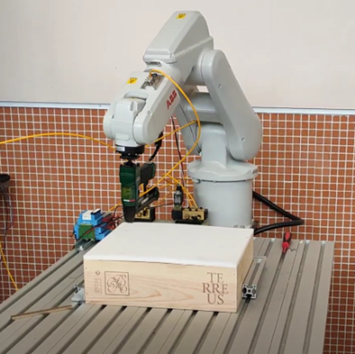
// 03 — Más allá del aula
Iniciativas que abren el taller a Europa, a la innovación y a las empresas. Porque la FP también se aprende colaborando.
Nuestro alumnado trabaja codo con codo con estudiantes de otros países europeos en proyectos técnicos compartidos: comparan normativas, diseñan soluciones juntos y lo presentan en inglés. Una forma diferente de aprender electricidad… y de hacer amigos en toda Europa.
Europa · Colaboración · IdiomasRealizar parte de la formación en empresa en otro país es una experiencia que marca un currículum. Acompañamos al alumnado en todo el proceso: preparación, viaje y estancia.
Movilidad · Formación en empresa
Con gafas de realidad virtual el alumnado recorre instalaciones, identifica riesgos y practica maniobras antes de tocar un solo cable. Seguridad y aprendizaje inmersivo.
Innovación · SeguridadConectamos autómatas, robots y estaciones de fabricación en una misma línea para capturar datos, supervisar el proceso y tomar decisiones como en una fábrica inteligente.
Automatización · DatosMontamos instalaciones de autoconsumo fotovoltaico y puntos de recarga de vehículo eléctrico. La transición energética también se construye en nuestros talleres.
Renovables · Movilidad eléctricaPreparamos a nuestro alumnado para campeonatos como Skills Castilla y León o el Concurso Jóvenes Instaladores. Velocidad, precisión y nervios de acero.
Skills · Excelencia// 04 — Actualidad
El trabajo diario en el taller tiene recompensa. Estos son algunos de los momentos de los que más orgullosos nos sentimos.
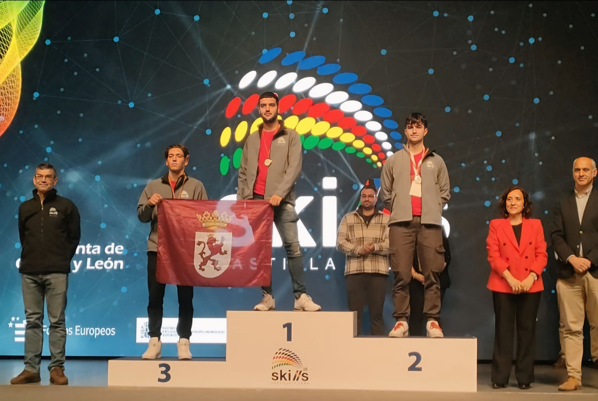
Nuestro alumno se subió al podio del campeonato autonómico de Formación Profesional en la modalidad de instalaciones eléctricas. Meses de entrenamiento en el taller que acabaron con una medalla al cuello.
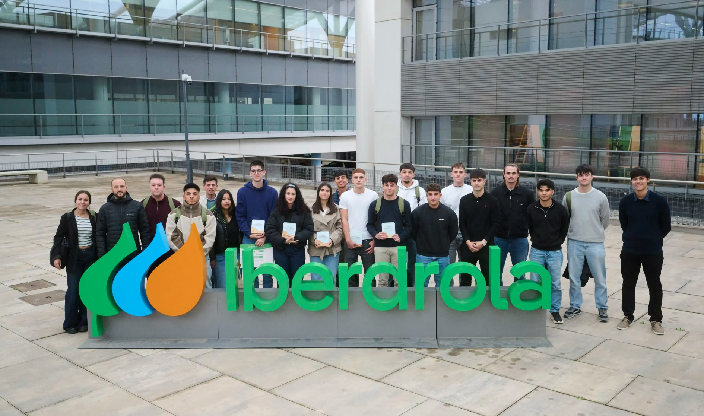
Dos de nuestros estudiantes participaron en los Premios Talento FP de Iberdrola, que reconocen a los mejores perfiles de Formación Profesional del sector energético.

Un box, un cuadro por montar y el reloj en marcha. Así vivió nuestro alumno la competición autonómica.
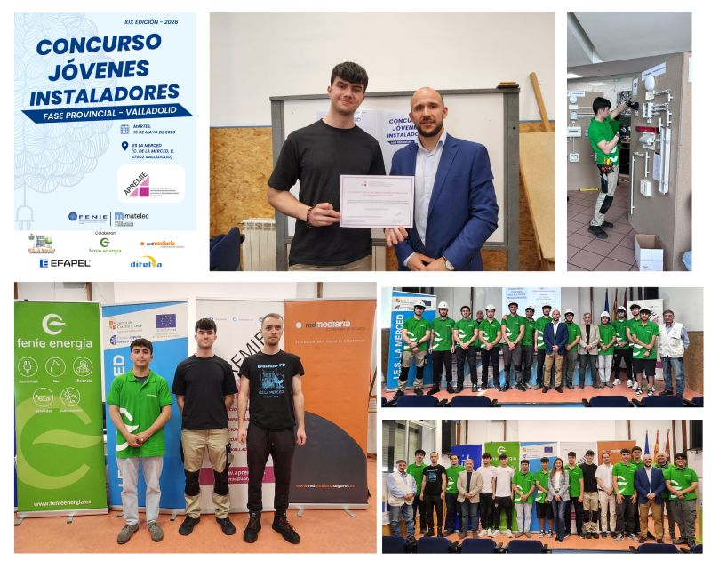
Nuestro alumno ganó el Concurso Jóvenes Instaladores de la provincia de Valladolid y representará al centro en la fase nacional, que se celebrará en Matelec en noviembre de 2026.
.jpg)
Detrás de cada medalla hay muchas tardes de taller, profesorado implicado y compañeros que empujan.

El IES Julián Marías forma parte de la Comunidad Digital Iberdrola, una red de centros educativos con la que Iberdrola comparte conocimiento y metodología en apoyo al ODS 4 (Educación de calidad).
Gracias a ella, nuestro alumnado puede acceder a la tecnología y los recursos que utilizan los profesionales del sector.
// 05 — Red de colaboración
Las empresas acogen a nuestro alumnado durante su formación y muchas acaban incorporándolo a su plantilla. Gracias a ellas, el salto del aula al trabajo es mucho más corto.
Colabora con nosotros acogiendo alumnado en formación en empresa o FP Dual.
// 06 — Contacto
¿Tienes dudas sobre la oferta, la admisión o quieres colaborar con nosotros? Escríbenos y te respondemos lo antes posible.
IES Julián Marías · Valladolid